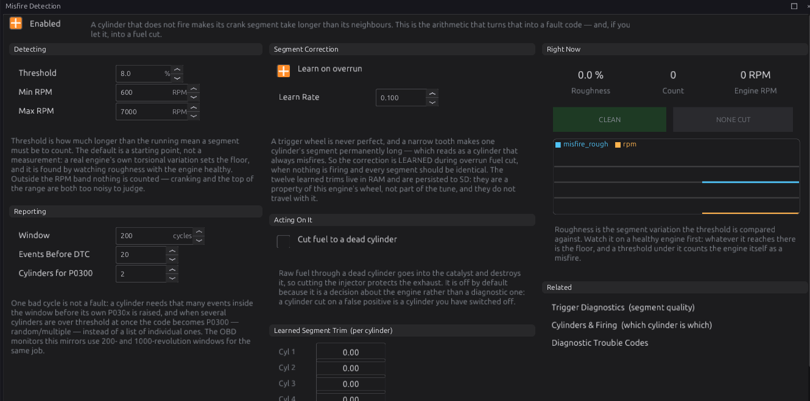

Misfire detection¶
Intermediate → Advanced
In one sentence: a cylinder that fires speeds the crank up through its power stroke and one that does not, doesn't — so the ECU times each cylinder's stretch of crank rotation, and a stretch that is noticeably slower than its neighbours is counted as a misfire.
What it does¶
Basic
The Misfire Detection module (misfire) measures, for every cylinder, how long the crank takes to
turn through that cylinder's power stroke (its segment), using the real trigger teeth. It compares
each segment with the average of the ones around it:
- The engine speeding up or slowing down shortens or lengthens every segment together, so it cancels out. Only a segment slow compared with its neighbours counts.
- A segment more than Misfire Threshold (default 8 %) longer than its neighbours is a misfire event for that cylinder.
- Enough events on one cylinder raise its code (P0301 for cylinder 1 … P030C for 12); several cylinders at once raise P0300 (random/multiple).
- Optionally, a cylinder with a misfire code has its fuel cut.
How it works¶
Intermediate
1 · When it can work¶
- It needs full sync (a cam, or distributor mode — chapter 16), so each segment belongs to a named cylinder.
- It needs at least 3 trigger teeth per cylinder segment. A 36-1 wheel on a four-cylinder gives about 9; a 4-tooth wheel on a twelve gives less than one. Below that the module reports nothing at all, rather than guessing.
- It only judges between Misfire Min RPM (600) and Misfire Max RPM (7000).
2 · The learned correction¶
No trigger wheel is perfect: a slightly narrow tooth can make one cylinder's segment always read long, which would look like a permanent misfire. So, with Learn on overrun on (the default), the module learns each cylinder's error during overrun fuel cut, when nothing is firing and every segment should be the same, at Learn Rate (0.10 per segment). The corrections are saved on the SD card with the other learned values; they belong to this engine's wheel, not to the tune. This needs Deceleration Fuel Cut (chapter 29) to be on.
3 · Counting and codes¶
- A cylinder needs Events Before DTC (20) misfires before its P030x is raised.
- The tally is halved every Window (200) engine cycles, so old events fade.
- If Cylinders for P0300 (2) or more cylinders are over the limit at once, the code is P0300 instead of a list of cylinders.
- The misfire codes are severity 1 (warnings).
4 · Cutting fuel¶
With Cut fuel to a dead cylinder on, a cylinder with a P030x code has its injector cut until the engine stops. It is off by default: a false alarm would switch off a working cylinder. It does not act on a P0300 (several cylinders). On an engine where injectors are shared (multi-point or bank injection, chapter 19), cutting one cylinder's injector cuts its whole group.

Before you start¶
Basic
- The trigger at full sync, with enough teeth (above).
- Deceleration Fuel Cut on, so the correction can learn.
Setting it up¶
Intermediate
- Open Configuration ▸ Protection ▸ Misfire Detection and tick Enabled. Leave Learn on overrun on.
- Drive normally with several overruns (lifting off from speed) so the correction learns. The Learned Segment Trim values change from 0.00 (not learned) to about 1.00.
- Watch Roughness on a healthy, warm engine across the range. The highest value it reaches is your engine's own noise; set Threshold comfortably above it.
- Test: pull one coil or injector plug at idle. That cylinder's code should appear.
Worked examples¶
Intermediate
Example 1 — a four-cylinder with a 36-1 wheel and a cam
Defaults work: about 9 teeth per segment, full sync from the cam. Threshold raised to 10 % after seeing roughness reach 6 % on a rough idle.
Example 2 — protecting a catalyst
Cut fuel to a dead cylinder on, with sequential injection so the cut really is one cylinder.
Tuning it¶
Advanced
- Rough idles (big cams) need a higher threshold, or a higher Min RPM.
- High RPM is noisy: lower Misfire Max RPM if false events appear near the limiter.
- A single cylinder that always reads a little long after learning points at the wheel or a sensor gap; give it more overruns to learn.
Diagnostics¶
Intermediate
| Code | Meaning |
|---|---|
| P0300 | Random / multiple cylinder misfire |
| P0301–P030C | Misfire on cylinder 1–12 |
Live channels: misfire_rough (the worst cylinder's roughness, %), misfire_count (total events),
misfire_cut_mask.
Troubleshooting¶
Basic → Advanced
| Symptom | Likely causes | Check |
|---|---|---|
| Nothing ever counted | Not at full sync; too few teeth per segment; outside the RPM band | Chapter 16; the wheel |
| One cylinder always misfiring on a good engine | Correction not learned (no overruns) | Enable DFCO; drive with overruns |
| Misfire codes at idle on a healthy engine | Threshold below the engine's own roughness | Raise Threshold, or Min RPM |
| Codes after a fuel cut test | Expected: a cut cylinder does not fire | Clear the codes |
Settings reference¶
| Setting | What it does |
|---|---|
Misfire Detectionmisfire.enabledRange: Off or On Default: Off |
Needs PHASE sync (a cam) and a wheel with enough teeth per segment — SegmentTimer decides availability and reports nothing at all below the floor. |
Misfire Thresholdmisfire.threshold_pctRange: 0.0 to 100.0 Default: 8.0 Units: % |
How much longer than the running mean a segment must be to count as a misfire. 8% is a starting point, not a measured value — a real engine's torsional variation sets the real floor. |
Misfire Min RPMmisfire.min_rpmRange: 0 to 10000 Default: 600 Units: RPM |
Below this the crank is cranking or stalling and segment-to-segment variation is dominated by the starter. |
Misfire Max RPMmisfire.max_rpmRange: 0 to 12000 Default: 7000 Units: RPM |
Above this the segments get short enough that timing resolution and torsional resonance swamp the combustion signal. |
Events Before DTCmisfire.events_to_dtcRange: 1 to 200 Default: 20 |
Misfires on one cylinder within the evaluation window before its P030x is raised. One bad cycle is not a fault. |
Evaluation Windowmisfire.window_cyclesRange: 1 to 10000 Default: 200 Units: cycles |
Engine cycles the event tally is counted over before it decays. The OBD monitors use 200 and 1000 revolution windows for the same job. |
Cylinders for P0300misfire.multi_cyl_for_p0300Range: 2 to 12 Default: 2 |
How many cylinders must be over threshold at once before the fault is reported as RANDOM/MULTIPLE (P0300) rather than per-cylinder. |
Learn Segment Correctionmisfire.learn_enabledRange: Off or On Default: On |
Learn per-cylinder wheel/TDC geometry error during overrun fuel cut, when nothing is firing and every segment SHOULD be identical. Without it a narrow tooth reads as a permanently misfiring cylinder. |
Correction Learn Ratemisfire.learn_rateRange: 0.000 to 1.000 Default: 0.100 |
EMA weight per overrun segment. |
Cut Fuel to a Dead Cylindermisfire.cut_fuelRange: Off or On Default: Off |
Stop injecting into a cylinder whose P030x is raised. Protects the catalyst from raw fuel; off by default because it is a decision about the engine, not a diagnostic. |
Misfire Segment Correction 1misfire.misfire_seg_1Range: -100 to 100 Default: 1-point curve |
Learned trim (runtime RAM, persisted to SD; not part of the tune). |
Misfire Segment Correction 2misfire.misfire_seg_2Range: -100 to 100 Default: 1-point curve |
Learned trim (runtime RAM, persisted to SD; not part of the tune). |
Misfire Segment Correction 3misfire.misfire_seg_3Range: -100 to 100 Default: 1-point curve |
Learned trim (runtime RAM, persisted to SD; not part of the tune). |
Misfire Segment Correction 4misfire.misfire_seg_4Range: -100 to 100 Default: 1-point curve |
Learned trim (runtime RAM, persisted to SD; not part of the tune). |
Misfire Segment Correction 5misfire.misfire_seg_5Range: -100 to 100 Default: 1-point curve |
Learned trim (runtime RAM, persisted to SD; not part of the tune). |
Misfire Segment Correction 6misfire.misfire_seg_6Range: -100 to 100 Default: 1-point curve |
Learned trim (runtime RAM, persisted to SD; not part of the tune). |
Misfire Segment Correction 7misfire.misfire_seg_7Range: -100 to 100 Default: 1-point curve |
Learned trim (runtime RAM, persisted to SD; not part of the tune). |
Misfire Segment Correction 8misfire.misfire_seg_8Range: -100 to 100 Default: 1-point curve |
Learned trim (runtime RAM, persisted to SD; not part of the tune). |
Misfire Segment Correction 9misfire.misfire_seg_9Range: -100 to 100 Default: 1-point curve |
Learned trim (runtime RAM, persisted to SD; not part of the tune). |
Misfire Segment Correction 10misfire.misfire_seg_10Range: -100 to 100 Default: 1-point curve |
Learned trim (runtime RAM, persisted to SD; not part of the tune). |
Misfire Segment Correction 11misfire.misfire_seg_11Range: -100 to 100 Default: 1-point curve |
Learned trim (runtime RAM, persisted to SD; not part of the tune). |
Misfire Segment Correction 12misfire.misfire_seg_12Range: -100 to 100 Default: 1-point curve |
Learned trim (runtime RAM, persisted to SD; not part of the tune). |
Related¶
- Chapter 16 — Trigger (full sync, wheels)
- Chapter 19 — Fuel (injection modes)
- Chapter 29 — Engine protection (DFCO, protection levels)
- Chapter 44 — Diagnostics and trouble codes